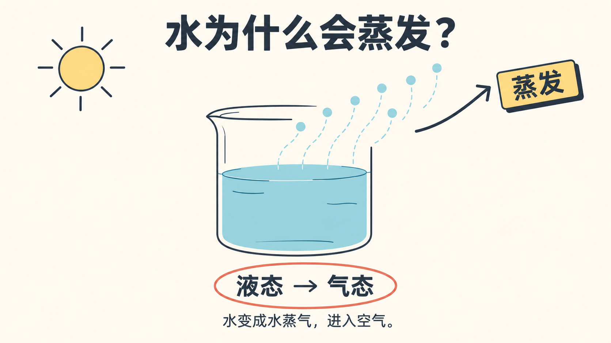
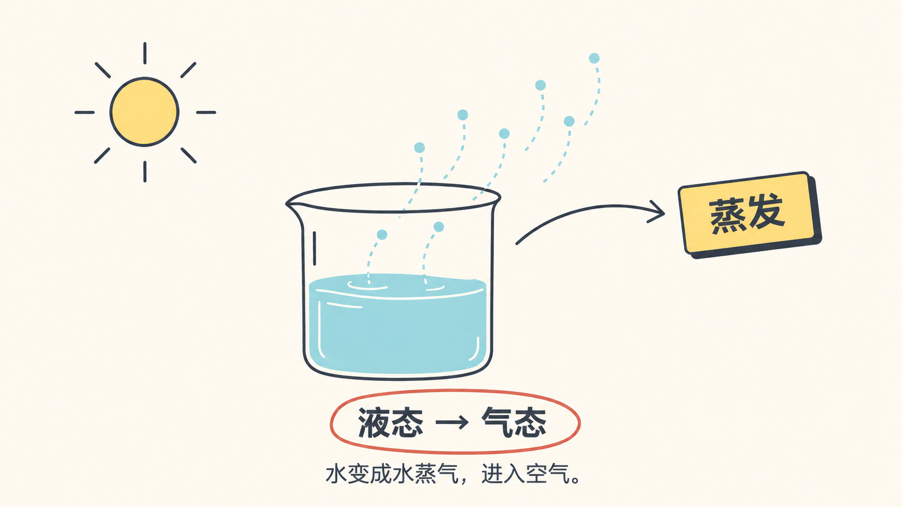
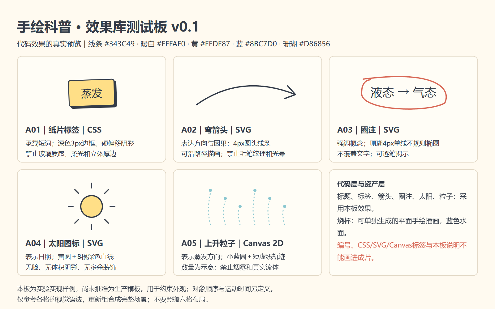

效果库图片能约束生图吗？
同一“水蒸发”案例、相同文字规则；A无参考图，B附实际代码效果板。一次探索对照，未固定随机种子，不能据此宣称稳定可靠。
A · 仅文字约束
保留标题；箭头明显加粗；粒子为7个。
B · 效果库图片＋相同文字约束
箭头更接近单线参考；遗漏标题；粒子为8个。
| 预先约束 | A | B |
|---|
| 纸片标签与硬偏移阴影 | 基本遵循，倾斜更大 | 基本遵循，倾斜更大 |
| 细单线弯箭头 | 偏粗，箭头变为厚实形状 | 更接近参考；无法从截图断言4px |
| 珊瑚单线圈注 | 基本遵循 | 基本遵循 |
| 太阳8根光线、无脸 | 遵循 | 遵循 |
| 6个蓝色粒子＋虚线 | 7个，数量错误 | 8个，数量错误 |
| 完整标题与说明 | 遵循 | 漏标题；说明保留 |
| 平面无新增高光/材质 | 烧杯水有渐变，背景有轻纹理 | 烧杯新增白色高光，背景有轻纹理 |
| 不画编号与实现标签 | 遵循 | 遵循 |
当前结论：图片参考对具体视觉语法有帮助，但没有保证完整内容、精确数量或不增加细节。代码层以组件实际输出为准；生成图要逐项核对。两张图均有偏差，尚未批准作为最终场景。
输入参考板 · 五种效果真实代码预览

打开代码效果板 · 查看两版完整提示词 · 实验方法与限制